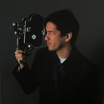

Artist / Biography
Who
am I?

I make films and photographs because certain moments refuse to leave me alone.
I’m Christian—a Southern California filmmaker, photographer, editor, and writer. I’m drawn to the quiet details: the pause before someone speaks, the texture of a place, the way memory changes color.
My film-production degree gave me the structure to turn those instincts into finished work. School sets, professional interviews, music venues, street photography, short films, and more than 100 live events taught me how to stay present, solve problems, and protect the feeling at the center of a story.
I want the work to feel lived-in, personal, and honest—not perfect for perfection’s sake, but intentional enough that someone else can recognize a piece of themselves in it.
Based in Jurupa Valley, California. Available for film, crew, editing, photography, and creative collaborations.